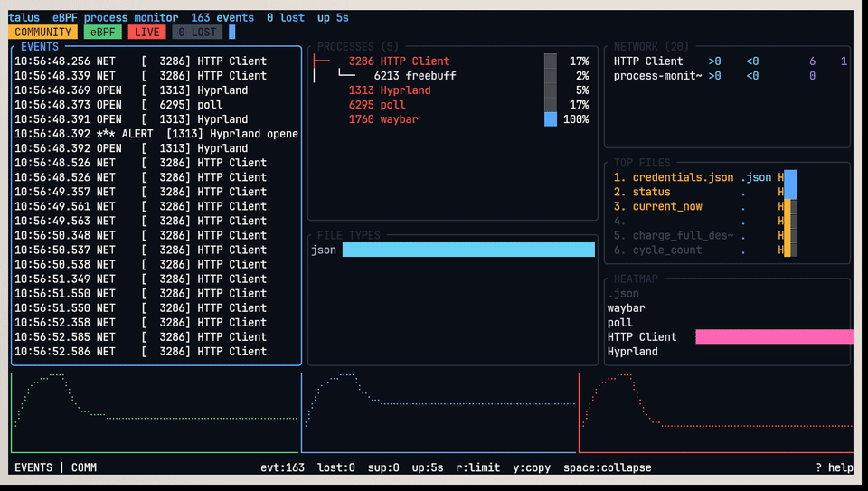

Real-time kernel-level process, file-operation, and network telemetry for Linux. Zero overhead. Zero agents. Just eBPF.
Writeup: Detecting ransomware with eBPF in Rust — how the detection heuristic works, with code.
View on GitHub 📄 Enterprise Report (PDF) ⬇ Download prebuilt binary →
eBPF tracepoints. Per-CPU perf buffers. FrankenTUI interface. Zero-copy from kernel to screen.
Traces execve, openat, connect, accept, sendto, recvfrom at the kernel level using eBPF tracepoints. Verifier-safe with bpf_probe_read_user.
Live terminal interface with Events, Processes, Network, TopFiles, Extensions, Alerts, and Ransomware Heatmap. Built with FrankenTUI.
Continuously scores per-process file-open rates against a sliding window. Flags ransomware-style mass file access in real-time with configurable thresholds.
Fixed-size ProcessEvent structs through per-CPU PerfEventArray. No heap allocations in the hot path. Kernel to userspace in nanoseconds.
Captures TCP/UDP connections, byte counts, and remote endpoints — all from kernel-level tracepoints. No packet sniffing needed.
Runs in containers with --privileged. Includes K8s DaemonSet, ServiceMonitor for Prometheus, and GHCR images.
From kernel tracepoint to your terminal — zero copies, zero locks, zero overhead.
One command. Full kernel observability.
The community edition is free forever (MIT). Enterprise adds response, integrations, and scale — for less than the price of two pizzas.
MIT licensed. Full TUI dashboard, real-time eBPF tracing (exec, files, network), ransomware alerts, and every detection heuristic. No feature bombs, no time limits, no account required.
Get from GitHub →That's a one-time payment — not a subscription. Perpetual license, yours forever, activates instantly on one machine.
✅ Web dashboard + REST API
✅ Auto-kill response (EDR mode)
✅ SIEM export: Kafka, ClickHouse, Memgraph
✅ FFI integrations & MeMLP neural detection
✅ Every future Enterprise update
30-day trial included on first run — no card, no signup.
$4.17/mo
for a year of protection
~1 h
of a sysadmin's time — one catch pays it back
$0/mo
after the first year — perpetual
∞
machines you can trace with the free edition
Level 4 of 20 towards full enterprise maturity. Supply chain security, build provenance, code hardening, and quality gates — all automated.
cargo-deny license & advisory gates, CycloneDX SBOM, gitleaks secret scanning, dependency review on every PR.
SLSA Level 2 provenance, Sigstore cosign keyless signing, GitHub artifact attestation, SHA-256/512 checksums.
SAFETY docs on all unsafe blocks, SecurityHeadersLayer (CSP, DENY, nosniff), crate-level lints enforced.
214 unit tests, edge cases, monitor invariants, clippy clean with -D warnings.
Writeup: Detecting ransomware with eBPF in Rust — how the detection heuristic works, with code.
📄 Download Full Enterprise Report (PDF)Buy → get your key by email → one command. No account, no telemetry, no license server lock-in.